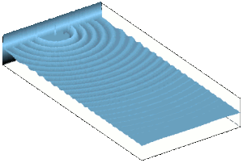
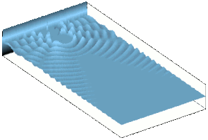

Comment ça marche ?
C'est quoi le bruit au juste ?
L'ouïe est l'un des premiers sens sollicité, et cela bien avant la naissance. Contrairement aux yeux, lorsque nos oreilles sont sollicitées par une source, il est impossible de les "fermer". C'est certainement l'une des raisons qui place le bruit parmi les premières nuisances citées.
Le bruit est une fluctuation de pression qui se propage dans l'air. Lorsque une onde de pression arrive à notre oreille, le tympan est mis en vibration et l'oreille interne transmet l'influx nerveux correspondant au cerveau. Dans le cas des très basses fréquences (en deçà de 100 Hz) voire des infrasons (fréquences en dessous de 20 Hz), c'est l'ensemble de notre corps qui est mis en vibration. Que le son soit capté par notre oreille ou par l'ensemble du corps, une sollicitation trop forte peut causer des dommages sur la santé´, la concentration et l'humeur.
En général il est relativement aisé de se protéger des sons aigus (hautes fréquences). Il suffit d'utiliser un casque antibruit passif, d'installer convenablement des matériaux acoustiques absorbants ou de simplement se boucher les oreilles ! Pour les basses fréquences, il faut avoir recours à de grandes quantités de matériaux absorbants ou utiliser des écrans acoustiques lourds. En dessous de 200 Hz, les casques passifs deviennent inefficaces. Heureusement, le contrôle actif a justement de très bonnes performances en basses fréquences. Le contrôle actif est donc la technologie complémentaire du contrôle dit passif. Le casque antibruit actif TechnoFirst NoiseMaster utilise la technologie active pour étendre ses performances protectrices vers les basses fréquences. Plus globalement, les systèmes de contrôle actif permettent de réduire le bruit basses fréquences en limitant l'encombrement et la masse des éléments ajoutés.
À l'heure où le prix du litre de carburant s'envole, le contrôle actif permet de réaliser des économies d’énergie et de préserver l’environnement en réduisant la masse des véhicules, tout en améliorant leur confort.
Principe du contrôle actif
Une ou plusieurs sources dites secondaires émettent des ondes de pressions de façon à produire un champ acoustique en opposition de phase avec le bruit indésirable dans une zone plus ou moins étendue, les deux champs de pression se superposent, interfèrent et donnent le silence. Dans la pratique on n'obtient pas le silence absolu mais une forte atténuation du bruit dépendante de la méthode utilisée pour générer l'antibruit.
L'exemple suivant illustre la façon dont une source secondaire vient créer une zone de silence dans un espace bruyant. Si un auditeur est placé dans la zone de silence, il ne serra plus gêné par le bruit indésirable.
 Sans contrôle actif la nuisance sonore se propage dans tout l'espace.
 Avec la source secondaire pilotée par contrôle actif on crée une zone de silence.
Dans la réalité les sources de bruit ne rayonnent pas si "régulièrement" dans l'espace et certains environnements ne permettent pas d'utiliser de simples haut-parleurs comme sources secondaires (température élevé etc.), c'est pourquoi TechnoFirst développe des sources adaptées à chaque situation.